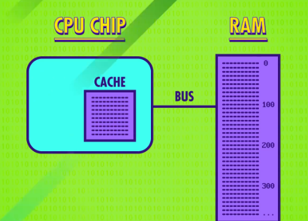
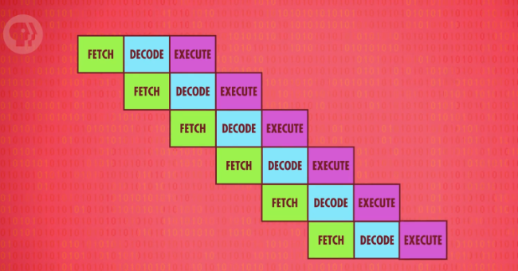
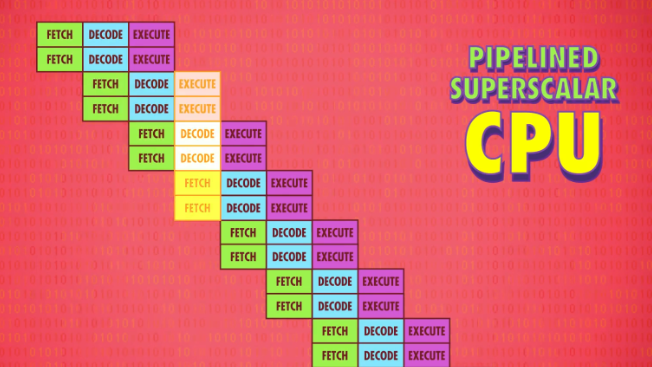
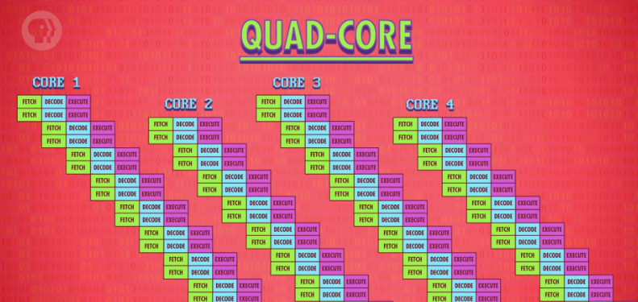
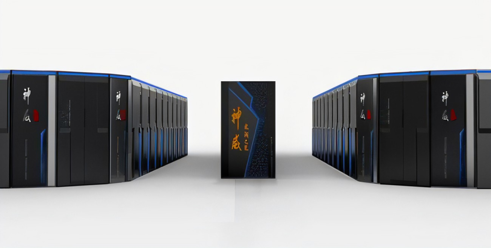

i.e. Advanced CPU Designs
随着本系列进展，我们知道计算机进步巨大，从 1 秒 1 次运算，到现在有千赫甚至兆赫的 CPU ，你现在看视频的设备八成也有 GHz 速度 ，1 秒十亿条指令 ，这是很大的计算量！
早期计算机的提速方式是减少晶体管的切换时间 ，晶体管组成了逻辑门，ALU 以及前几集的其他组件，但这种提速方法最终会碰到瓶颈，所以处理器厂商发明各种新技术来提升性能，不但让简单指令运行更快，也让它能进行更复杂的运算。
上集我们写了个做除法的程序，给 CPU 执行，方法是做一连串减法，比如 16 除 4 会变成 - 16-4 -4 -4 -4 ，碰到 0 或负数才停下 。但这种方法要多个时钟周期，很低效。所以现代 CPU 直接在硬件层面设计了除法，可以直接给 ALU 除法指令，这让 ALU 更大也更复杂一些，但也更厉害 。 复杂度 vs 速度的平衡 在计算机发展史上经常出现。
举例，现代处理器有专门电路来处理图形操作，解码压缩视频，加密文档 等等。如果用标准操作来实现，要很多个时钟周期。你可能听过某些处理器有 MMX, 3DNOW, SSE ，它们有额外电路做更复杂的操作，用于游戏和加密等场景。指令不断增加，人们一旦习惯了它的便利就很难删掉，所以为了兼容旧指令集，指令数量越来越多。
英特尔 4004，第一个集成 CPU，有 46 条指令，足够做一台能用的计算机，但现代处理器有上千条指令，有各种巧妙复杂的电路，超高的时钟速度带来另一个问题 - 如何快速传递数据给 CPU 。就像有强大的蒸汽机，但无法快速加煤。RAM 成了瓶颈，RAM 是 CPU 之外的独立组件，意味着数据要用线来传递，叫"总线"，总线可能只有几厘米，别忘了电信号的传输接近光速，但 CPU 每秒可以处理上亿条指令，很小的延迟也会造成问题。RAM 还需要时间找地址取数据，配置，输出数据，一条"从内存读数据"的指令可能要多个时钟周期，CPU 空等数据。
缓存
解决延迟的方法之一是给 CPU 加一点 RAM - 叫 “缓存” ，因为处理器里空间不大，所以缓存一般只有 KB 或 MB ，而 RAM 都是 GB 起步。缓存提高了速度，CPU 从 RAM 拿数据时，RAM 不用传一个，可以传一批，虽然花的时间久一点，但数据可以存在缓存，这很实用，因为数据常常是一个个按顺序处理。
> CPU 缓存
举个例子，算餐厅的当日收入，先取 RAM 地址 100 的交易额，RAM 与其只给 1 个值，直接给一批值，把地址 100 到 200 都复制到缓存。当处理器要下一个交易额时，地址 101，缓存会说：“我已经有了，现在就给你”，不用去 RAM 取数据，因为缓存离 CPU 近，一个时钟周期就能给数据 - CPU 不用空等！比反复去 RAM 拿数据快得多。如果想要的数据已经在缓存，叫 缓存命中 ，如果想要的数据不在缓存，叫 缓存未命中 。缓存也可以当临时空间，存一些中间值，适合长/复杂的运算。继续餐馆的例子，假设 CPU 算完了一天的销售额，想把结果存到地址 150，就像之前，数据不是直接存到 RAM ，而是存在缓存，这样不但存起来快一些，如果还要接着算，取值也快一些。
但这样带来了一个有趣的问题，缓存和 RAM 不一致了 😈。这种不一致必须记录下来，之后要同步，因此缓存里每块空间有一个特殊标记，叫 “脏位” （dirty bit） - 这可能是计算机科学家取的最贴切的名字。同步一般发生在 当缓存满了而 CPU 又要缓存时，在清理缓存腾出空间之前，会先检查 “脏位”。如果是"脏"的，在加载新内容之前，会把数据写回 RAM 。
指令流水线
另一种提升性能的方法叫 “指令流水线” 。
想象下你要洗一整个酒店的床单，但只有 1 个洗衣机，1 个干燥机，选择 1：按顺序来，放洗衣机等 30 分钟洗完，然后拿出湿床单，放进干燥机等 30 分钟烘干，这样 1 小时洗一批；另外一说：如果你有 30 分钟就能烘干的干燥机，请留言告诉我是什么牌子，我的至少要 90 分钟。即使有这样的神奇干燥机，我们可以用"并行处理"进一步提高效率。就像之前，先放一批床单到洗衣机，等 30 分钟洗完，然后把湿床单放进干燥机，但这次，与其干等 30 分钟烘干，可以放另一批进洗衣机，让两台机器同时工作，30 分钟后，一批床单完成，另一批完成一半，另一批准备开始，效率 x2 ！🎉
处理器也可以这样设计。
第 7 集，我们演示了 CPU 按序处理 - 取指 → 解码 → 执行，不断重复。这种设计，三个时钟周期执行 1 条指令，但因为每个阶段用的是 CPU 的不同部分，意味着可以并行处理（parallelize）！“执行"一个指令时，同时"解码"下一个指令，“读取"下下个指令，不同任务重叠进行，同时用上 CPU 里所有部分。
这样的流水线每个时钟周期执行 1 个指令，吞吐量 x 3 。
和缓存一样，这也会带来一些问题。
第一个问题是指令之间的依赖关系，举个例子，你在读某个数据，而正在执行的指令会改这个数据，也就是说拿的是旧数据，因此流水线处理器要先弄清数据依赖性，必要时停止流水线，避免出问题。高端 CPU，比如笔记本和手机里那种，会更进一步，动态排序有依赖关系的指令，最小化流水线的停工时间，这叫 “乱序执行” 。和你猜的一样，这种电路非常复杂，但因为非常高效，几乎所有现代处理器都有流水线。
第二个问题是 “条件跳转”，比如上集的 JUMP NEGATIVE ，这些指令会改变程序的执行流。简单的流水线处理器，看到 JUMP 指令会停一会儿，等待条件值确定下来，一旦 JUMP 的结果出了，处理器就继续流水线。因为空等会造成延迟，所以高端处理器会用一些技巧，可以把 JUMP 想成是 “岔路口”，高端 CPU 会猜哪条路的可能性大一些，然后提前把指令放进流水线，这叫 “推测执行” 。当 JUMP 的结果出了，如果 CPU 猜对了，流水线已经塞满正确指令，可以马上运行，如果 CPU 猜错了，就要清空流水线，就像走错路掉头。让 GPS 不要再！叫！了！为了尽可能减少清空流水线的次数，CPU 厂商开发了复杂的方法，来猜测哪条分支更有可能，叫 “分支预测” ，现代 CPU 的正确率超过 90% 。
理想情况下，流水线一个时钟周期完成 1 个指令，然后"超标量处理器"出现了，一个时钟周期完成多个指令。即便有流水线设计，在指令执行阶段，处理器里有些区域还是可能会空闲。比如，执行一个 “从内存取值” 指令期间， ALU 会闲置，所以一次性处理多条指令（取指令+解码） 会更好。如果多条指令要 ALU 的不同部分，就多条同时执行。我们可以再进一步，加多几个相同的电路，执行出现频次很高的指令。举例，很多 CPU 有四个，八个甚至更多完全相同的 ALU ，可以同时执行多个数学运算。
好了，目前说过的方法，都是优化 1 个指令流的吞吐量。
另一个提升性能的方法是同时运行多个指令流，用多核处理器。你应该听过双核或四核处理器，意思是一个 CPU 芯片里，有多个独立处理单元，很像是有多个独立 CPU，但因为它们整合紧密，可以共享一些资源，比如缓存，使得多核可以合作运算，但多核不够时，可以用多个 CPU 。高端计算机，比如现在给你传视频的 Youtube 服务器，需要更多马力，让上百人能同时流畅观看，2 个或 4 个 CPU 是最常见的。
> 多核处理器
但有时人们有更高的性能要求，所以造了超级计算机！如果要做怪兽级运算，比如模拟宇宙形成，你需要强大的计算能力，给普通台式机加几个 CPU 没什么用，你需要很多处理器！ 不…不…还要更多，更多。截止至视频发布，世上最快的计算机在中国无锡的国家超算中心 - 神威·太湖之光有 40960 个 CPU，每个 CPU 有 256 个核心，总共超过 1 千万个核心，每个核心的频率是 1.45GHz ，每秒可以进行 9.3 亿亿次浮点数运算，也叫 每秒浮点运算次数 (FLOPS)。相信我，这个速度很可怕，没人试过跑最高画质的《孤岛危机》但我估计没问题。
> 神威·太湖之光
长话短说，这些年处理器不但大大提高了速度，而且也变得更复杂，用各种技巧，榨干每个时钟周期 做尽可能多运算。我们的任务是利用这些运算能力，做又酷又实用的事。
编程就是为了这个，我们下集说。
下周见。